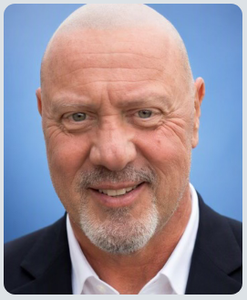

CHI+AI · Ralph Babusci + audience
Learn.
Create.
Work confidently.
A friendly, practical conversation about Microsoft Copilot—and how to ask clearly, check the answer, and choose what to do.
Open Microsoft Copilot ↗CHI+AI conversation
Learn, create, and work with confidence
Public libraries help people navigate new information and technology. This conversation gives Chicagoans a friendly place to try Microsoft Copilot, ask questions, and decide for themselves whether and how to use AI.
Meet the conversation leaders
Ralph + Heather
A shared starting point
Heather and Ralph previously presented an AI series for Chicago Public Library employees, focused on how staff could help the public understand and navigate AI.
Heather: “Ralph and I worked on an AI series for library employees. Today we'll bring that same public-first spirit to a few simple Copilot demos.”
Ralph: “We'll try things together, ask questions, and decide for ourselves what is useful.”
The central idea
Three habits for working with AI
01
Ask clearly
Explain what you need, who it is for, and what matters.
02
Check the answer
It can sound sure and still be wrong. Check facts that matter.
03
Choose what to do
Keep it, change it, or don't use it. You decide.
Live audience moment
Start with the room
Audience pulse
Where are you starting?
Select the statement that feels most like you. There is no wrong answer.
Your response will appear here.
Before we begin
Keep it safe and simple
“Today we'll use made-up examples. Please don't enter personal details, passwords, private messages, or work information into a public AI tool.”
Use a personal Microsoft account if you choose. Watching is fine, and no one needs to share personal information.
Before the demos
Copilot and your data
It goes to Microsoft
Copilot processes your prompt to answer. With a personal account, chats can be saved in your history. The terms allow Microsoft to process content to run and improve Copilot; some processing may involve people.
Know the distinction
Microsoft's current Copilot activity-history guidance says prompts, replies, and file contents in the Copilot app are not used to train foundation models. That does not mean no data is stored or otherwise processed.
Review your choices
Settings include choices such as saved memories, connected experiences, web search, and personalized ads. The Microsoft Privacy Dashboard lets you export or delete Copilot activity history.
Your content and your choices
Microsoft's terms say it does not own your prompts and replies, but you give it permission to process them to run and improve Copilot. You can stop using Copilot and manage or delete activity. Outputs may not be unique; review them before sharing.
Use a personal Microsoft account for this public demo—not a work or school account. Don't enter passwords, private messages, sensitive details, or work information. This summary is not legal advice; Microsoft's current terms and privacy pages are the source of truth.
Privacy controls ↗ · Export or delete activity ↗ · Privacy statement ↗
Microsoft guidance reviewed October 2, 2026. Terms, settings, and product behavior can change.Audience participation
Make a clear request
Try this in Copilot
Write a friendly event invitation. It is for families and neighbors. Use only the fictional event details below. Do not make up costs, registration, or services.
A clear request helps. You still decide what to keep.
The journey
Navigate the 40 minutes
0:00
Welcome
Start with the room
Where have you noticed AI in everyday life?
3:00
Learn
What Copilot can do
It can help explain an idea. It can also make mistakes.
7:00
Privacy
Terms, data, and choices
Use a personal account if you choose; learn what Microsoft says about chats and training.
13:00
Demo 1
Learn with Copilot
Ask for a plain-language explanation, then check its source.
18:00
Demo 2
Create an invitation
Give Copilot made-up facts and ask it not to guess.
28:00
Check
Check before you share
Compare the answer with original facts and reliable sources.
32:00
Demo 3
Get work started
Improve a made-up resume sentence without adding claims.
36:00
People first
Keep people in charge
AI offers ideas. People decide whether to use them.
38:00
Close
Three questions
Is it safe? Did I check? Do I want to use it?
Keep it simple
Four questions to ask Copilot
1
What do I need?
Explain the task simply.
2
Who is it for?
Give only the context that matters.
3
What facts can it use?
Share public or made-up details.
4
What should it avoid?
Ask it not to make up missing details.
Fictional example
Write a friendly invitation for families and neighbors. Use only the made-up event details below. Don't invent missing details; list anything the organizer still needs to decide.
You don't need special words. Tell Copilot what you need and what it should not guess.
Demo 2 · Create
Make a friendly event invitation
Ask simply
“Write an invitation for a repair event.”
Add the facts
Give the made-up date, time, place, and activity.
Set a limit
“Don't make up costs or registration.”
Check it
Compare the answer with the facts.
“A polished invitation can still be wrong.”
Made-up event: Saturday, October 17 · 10 a.m.–noon · Eastside Community Room · small household items · registration details not decided.
Two more ways to try Copilot
Learn and get work started
Understand a new idea
Explain generative AI in plain language. Give one everyday example. Link to a source I can check.
Open a source and see if it supports the answer.
Improve a made-up resume sentence
I helped at a community book swap. I sorted books and answered questions. Make this clearer, but don't add facts.
Keep only wording the person can stand behind.
Before you use or share
Three quick questions
Takeaway
Try one small task—if you want
Ask for an explanation, brainstorm ideas, or make a public paragraph easier to read. Check the answer before using it.
Copilot can help us get started. We decide what to do.